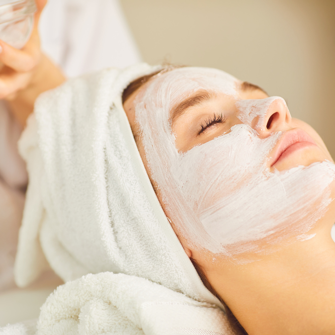

Sobre a Make Up Artist House:
Nossa missão é tornar mulheres mais belas e proporcionar autoestima e felicidade para as nossas clientes.
Oferecemos profissionais experientes e antenados às mudanças no mundo da moda. O atendimento possui padrão de excelência e agilidade, garantindo qualidade e satisfação aos nossos clientes.
Localizada no coração da cidade a Make Up House traz para o mercado o que há de melhor para suas sonhadas maquiagens. Fundada em 2023, a Make Up House já é destaque na cidade e conquista novos clientes a cada dia.
Nosso Estabelecimento
Nosso estabelecimento está localizado no coração da cidade.
Benefícios
- Atendimento ao cliente
- Espaço diferenciado
- Localização
- Profissionais Qualificados
- Pontualidade
- Limpeza
Assista um vídeo de dicas de cuidados com a pele com a dermatologista: Dra. Alice Jaruche.